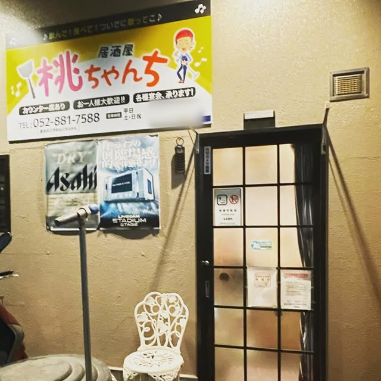
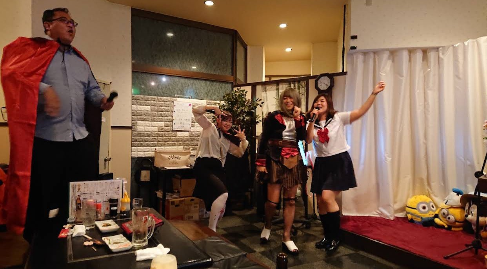
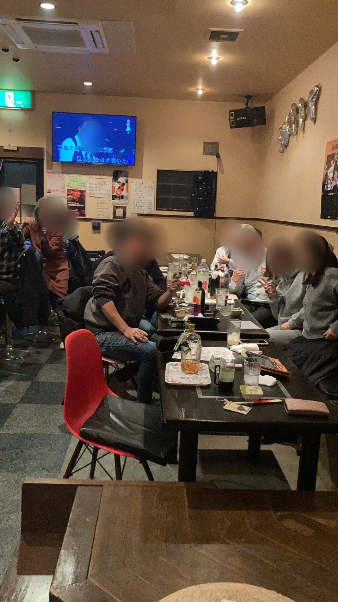
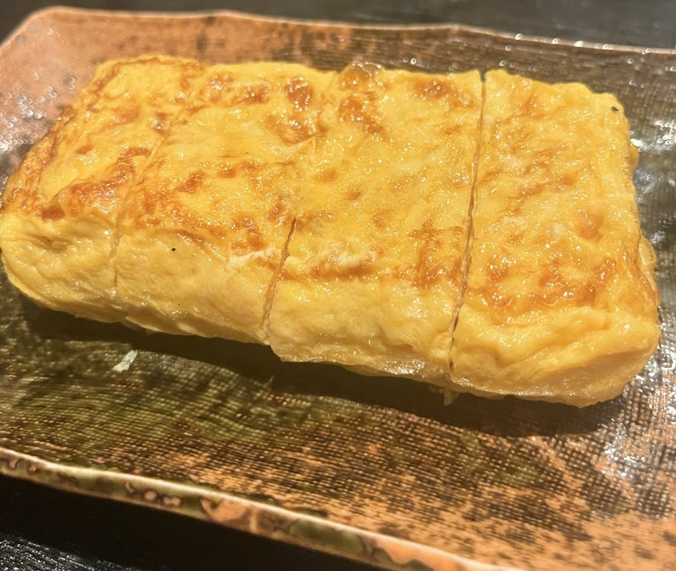
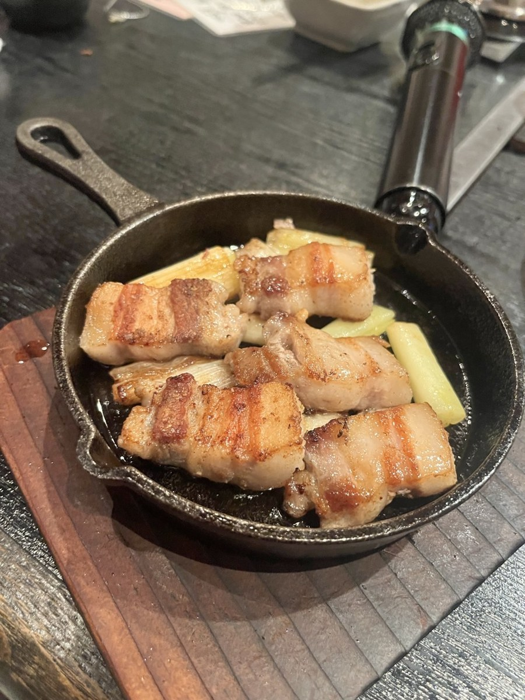
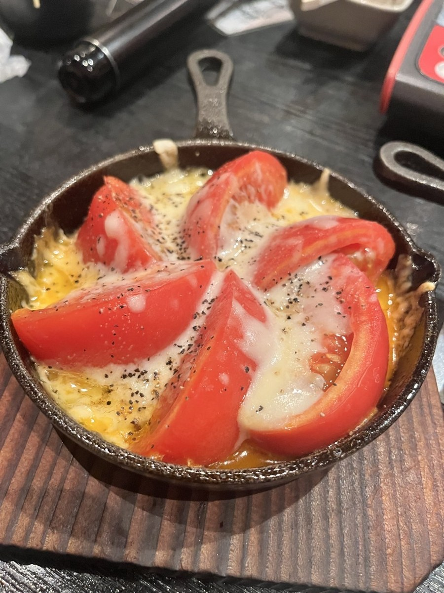
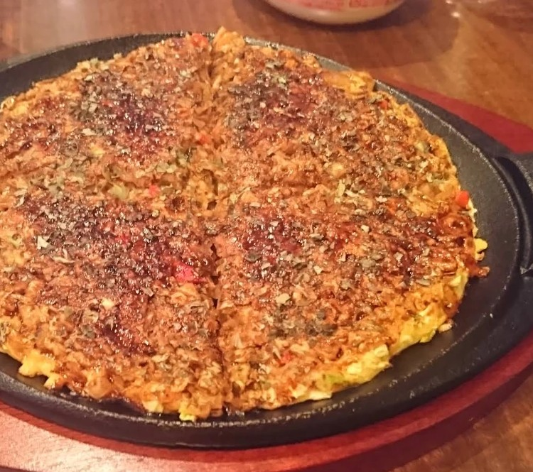

金山駅から歩いて7分。おいしい手づくりのごはんと、1曲200円のカラオケと、やさしいマスター（桃ちゃん）とママ。はじめての方も、おひとりの方も、ふらっと気軽にお立ち寄りください。

10枚つづりのチケットなら1,000円。有効期限なしなので、5曲以上歌う方はチケットがお得です。上手い下手は関係なし、みんなで盛り上がりましょう。
チャージはたったの500円。チューハイは460円、おつまみは500円から。歌って飲めるのにスナックのように高くなく、仕事帰りに毎日でも寄りたくなる良心的な価格です。
はじめてでも、おひとりでも大丈夫。マスター（桃ちゃん）とママが、いつも笑顔であったかく迎えてくれます。
元鉄板焼き屋さんだから鉄板料理が人気です。だし巻き卵、ねぎま、トマトチーズ焼きなどは常連さんにも大人気。お酒によく合います。
隣に座ればもう顔なじみ。笑い声の絶えない、アットホームなお店です。
ご予約はお電話かInstagramのDMで。



人気No.1自家製だしで、ふんわり焼き上げる一品。お店でいちばんの人気です。

人気No.2スギモトの国産豚バラ肉を使った、ここでしか食べられない桃ママの味。砂ぎもとのセットは1,000円です。
桃ママ特製のからあげ。

スキレットで、トマトにとろけるチーズをたっぷり。熱々で出てくる人気の一品です。

鉄板で焼き上げる、みんなでつつける定番メニュー。
トマト1個・アボカド1/2個・ブルーベリー20粒・バナナ1本・砂糖不使用ヨーグルト100g・はちみつ。一日に食べるといい分量の食材がそろった、デザートのようなサラダです。糖質を控えたい方は、はちみつ抜きでご注文ください。
メニュー・価格は変更になる場合があります。最新の内容はお店でご確認ください。
※品切れの場合があります。
このほかに、ホワイトボードの日替わりメニューもあります。材料があれば、あなただけの裏メニューもお作りします。火を使うお料理のラストオーダーは21:30です。
セット料金 おひとり様1,000円（氷・ミネラルウォーター・お湯 使い放題）。割り物（炭酸・ウーロン茶・緑茶・麦茶・青汁・コーン茶・ジンジャーエール・コーラ）はピッチャーかペットボトルで各500円。
ご飲食代が2,000円未満の場合も、2,000円とさせていただきます。
お通しはありません。ママからの小鉢はサービスです。
10枚つづりのチケットなら1,000円（税込・現金・有効期限なし）。5曲以上歌う方はチケットがお得です。1曲1枚、メドレーは3枚です。採点で景品が当たることも。
セット料金おひとり様1,000円（氷・ミネラルウォーター・お湯 使い放題）。
クレジットカード・電子マネーはご利用いただけません。
チケットは有効期限なし。5曲以上歌うなら、チケットがお得です。
黄色い看板が目印です
Googleマップで開く